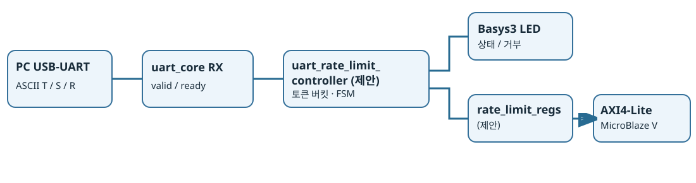

자체 신규 설계안. 신규 RTL·테스트벤치·합성·Timing·Basys3 실물 검증 미실시.

PC UART → uart_core RX → uart_rate_limit_controller → Basys3 LED
└→ rate_limit_regs → AXI4-Lite → MicroBlaze V100ms마다 토큰 1개 보충, 최대 4개. T/R 명령은 토큰 1개 소비하며 부족하면 거부·이벤트 기록. S 조회는 토큰 미소비. 외부 전원·5V I/O 없음.
| 신호 | 역할 |
|---|---|
| uart_rx_data / valid / ready | 수신 명령·핸드셰이크(제안) |
| tokens[2:0] | 처리 예산 0~4 |
| led_state / led_blocked | 정상 동작·거부 상태 |
| accepted_count / rejected_count | 포화 통계 |
| overload_pending | 과부하 이벤트 래치 |
FSM: IDLE → DECODE → APPLY 또는 REJECT → IDLE. 보충 타이머는 독립 실행.
Reset, T 4회 수락, 5번째 거부, 100ms 보충, S 조회, 잘못된 명령, valid/ready, 동시 보충·소비, 카운터 포화, Reset 우선, R 수락/거부를 검사한다. 시험은 아직 실행하지 않았다.
제어정책과 도식은 자체 창작. 외부 코드·이미지 복제 없음. Basys3 보드 내장 UART/LED만 사용하며 3.3V GPIO 기준 준수. RTL·AXI·SoC는 향후 구현 및 검증 대상.
전체 Markdown 설계서 · JSON 메타데이터 · SVG 구조도 · 목록